OneBid：面向多种 oCPX 广告场景的统一自动出价基础模型
论文：OneBid: A Unified Auto-Bidding Foundation Model for Diverse oCPX Advertising Scenarios
作者：Yewen Li、Peng Jiang、Yitian Li、Pengfei Lv、Xialong Liu、Peng Jiang、Qingpeng Cai（原文两位作者同名）
机构：快手；前三位作者共同一作，Qingpeng Cai 为通讯作者。
发布日期：2026-09-18，arXiv v1；精读日期：2026-09-22。PDF 使用 2027 Preprint 模板，不能据此认定会议已接收。
论文入口：arXiv:2609.21550
代码状态：未核验独立代码入口。以下事实来自原论文主文及附录，线上收益为作者报告，未独立复现实验。
1. 背景和问题
为每种转化场景单独维护竞价模型，会导致部署流程割裂、工程重复，并限制跨场景建模潜力；统一模型还必须同时解决多目标控制、严格时延下的容量扩展和安全的离线策略改进。
OneBid 研究的是广告平台的自动出价控制。广告主指定希望优化的动作，平台根据流量质量、历史消耗和当前成本表现调整出价，争取在成本有效的条件下获得更多转化价值。这里的“动作”有两层含义：业务侧的转化动作可以是提交表单、激活应用、购买、提交线索等；策略侧的控制动作则是更新一个连续出价倍率。混淆这两层，就容易把论文理解成一个预测用户是否转化的模型。它确实依赖转化率估计，但真正要解决的是“现在应该把竞价倍率调到多少，以及这会怎样影响后续投放”。
作者所说的多场景异质性，首先不是简单的类别特征不同。应用激活相对稠密，线索提交往往更稀疏；购买和目标广告支出回报的价值计量也不同。某些场景愿意用更宽松的成本比换取投放规模，另一些场景需要更严格的成本控制。若所有日志直接混在一起训练一个普通回归网络，同样的历史状态可能对应不同业务偏好的合理动作；若全部拆开，又不能利用平台流量节律、竞争环境和成本反馈等共有规律。论文的统一建模因此带有明确的结构要求：既共享骨干和学习信号，又给场景差异保留表达容量。
经济量的定义决定了这篇论文该如何读。cost 是广告主侧已经产生的费用；target cost 是由归因到目标动作的数量乘广告主指定 CPA 等方式形成的“记账转化价值”。二者的比值描述成本效率，而不是通常语境下广告主实际商品利润的回报率。论文将 ADVV 定义为平台在补偿机制下可以合理向广告主收取的金额。超出目标成本边界的部分可能需要平台补偿，因此更高消耗不必然带来更高可收费价值。ADVV 不是转化个数，也不应直接替换为广告主收入。 线上总体增长百分比必须沿用这个指标名称和业务定义。
形式化问题仍写了总预算约束，但作者强调本平台的 oCPX 场景常常没有强硬预算，或者预算约束比较弱。真正经常起约束作用的是周期结束时的成本比有效性。这个前提使研究从传统“预算花完时如何最大化回报”的问题，偏向“扩大量与维持成本有效区间”的联合控制。不能把这项方法未经改造就当作强预算约束市场的现成答案；严格预算耗尽、余额不可为负等约束，可能需要额外的安全层和可行性处理。这里预算相关特征仍参与状态与节奏控制，只是论文没有把它作为最主要的实验矛盾。
决策时间尺度也值得分开。策略可以每十分钟左右更新一次广告活动的出价倍率，但平台面对大量广告活动时仍要在高 QPS 下即时回答控制服务请求。单个广告主更新频率较低，并不意味着每次模型调用可以慢慢算。系统服务超时以几十毫秒计，模型容量增长如果直接增加所有请求的计算量，会影响整条投放链路。因此作者采用序列级 MoE 的动机既包括跨场景表示，也包括固定每个请求实际执行的专家分支。讨论容量与计算时，应分别看总参数、激活参数、内核调度和端到端服务时延。
Decision Transformer 提供了把历史轨迹、目标和动作组织成因果序列的起点。普通 DT 用一个 Return-to-Go 条件告诉模型希望获得多少未来回报；对于同时关心投放价值与成本效率的广告任务，提前把这两者压成一个标量，会把某种权重偏好固化在数据和训练目标里。当表单、激活和购买需要不同取舍时，单一标量可能隐藏本来应该显式可控的维度。OneBid 的第一项改造是把目标接口拆成两个条件，第二项是加入价值预测辅助任务，第三项是用共享专家和场景路由专家实现容量分工，最终再以离线后训练适配具体部署偏好。
后训练的困难来自真实奖励不可随手查询。在语言推理中可以检查某个生成答案是否正确，但给定一个新的竞价倍率，离线日志里通常没有它在同一环境下的真实后果。要获得该反事实奖励，需要把它投入真实拍卖，可能损害广告主成本或平台收入。CROP 因而用训练得到的 critic 比较候选动作，并限制策略偏离已有日志的程度。这是一种可操作的风险缓解路径，不是消除估计误差的证明；如果 critic 在候选动作范围内系统性高估，组内相对排序仍可能把策略推向错误方向。
评价这项工作时，适合采用三层证据。第一层看动作预测误差是否随数据和容量下降，证明统一骨干能够吸收日志规律；第二层看 critic 误差、离线相对价值和控制接口消融，定位方法部件的作用；第三层看真实线上 ADVV、成本有效率与服务时延，确认整套系统在生产流量上有用。前两层无法替代第三层，第三层的整体效果又无法自动把收益归因到每一个部件。这种区分使“基础模型”成为一套多场景预训练和后训练组织方式，而不是仅凭模型参数较大就获得的能力标签。
此外，“统一”也不等于抹去场景身份。论文始终把业务类型作为输入和路由依据，并允许在离线后训练时选择不同奖励惩罚。它统一的是数据组织、可复用骨干和学习流程，最终部署偏好仍然由场景决定。因此评价其工程收益时，不只要问一套模型能否覆盖更多任务，也要问场景接入是否需要新增专家、重新训练多少参数，以及新场景缺少历史日志时条件目标如何设置。当前论文并未系统回答所有冷启动问题，相关能力应作为待验证的研究方向，而非从多场景训练成功直接推断出的零样本能力。
2. 方法
2.1 多目标条件与整体流程
每个投放周期被表示成状态、控制动作、奖励和场景标识构成的序列。状态包括广告主、流量、预算消耗、近期拍卖表现等信息；模型根据最近轨迹预测下一次出价倍率。原文式（2）给出常见出价形式：
符号解释：$b_i$ 是机会 $i$ 的出价，$\alpha$ 是策略控制的倍率，CPA 是广告主指定的单次动作成本，$p\mathrm{CTCVR}_i$ 是转化概率估计。模型不是直接替代该概率预测器，而是在其结果及当前投放状态上控制倍率。训练输入按 RTG、CTG、状态、动作组织，并叠加场景嵌入和位置表示；未来结果只用于离线构造监督条件，线上要用 pacing 模块给定的期望目标及已发生反馈更新条件，不能把未知未来真实回报当成可用输入。
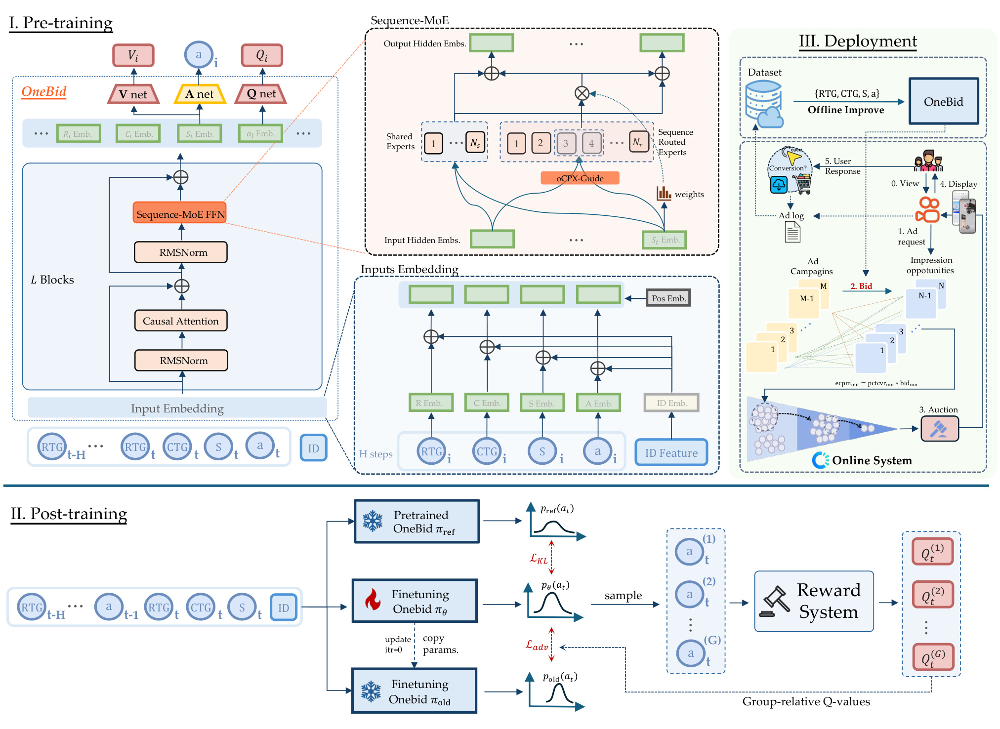
Figure 1 把统一模型拆成可追踪的信息流。左上部分把不同场景的日志映射成统一 token 序列，通过因果注意力建模时间联系，然后同时输出动作和 Q/V 价值估计；右侧嵌入图说明两个目标条件并不是事后给输出加权，而是在预测动作之前进入网络。中间的共享专家对所有场景开放，场景专家只让当前序列进入指定分支，从结构上给共性与残差分工。左下的后训练流程则保留三份角色不同的策略：被冻结的预训练参考策略提供偏移基准，旧策略负责候选采样，当前策略接受优化。每个状态的一组动作经过奖励系统和价值模型评分，随后形成组内相对优势，最后用受约束的目标更新策略。这些动作没有直接送到线上环境试错，图右上生产闭环表示部署后的真实日志可以再进入离线学习。
图中最容易误读的是“Reward System”通向候选 Q 值的箭头。它并不意味着任意出价都能查询到即时真实收益，而是先把业务偏好实例化为离线奖励，再由 critic 泛化到候选动作。因而整条闭环中存在两类反馈：已部署策略产生的可观测日志，以及模型对未执行候选的价值估计。二者的可信度不同。另一处需要区分的是场景路由与专家混合权重：前者在整个序列上确定激活集合，后者仍可随状态改变，既避免 token 级重新分发，又不必让一个场景的所有时刻完全使用同样的线性混合。该图因此支撑的是输入、表示、目标和后训练四部分的配合，而非一个单独 MoE 层即可带来的线上改进。
为了缓解转化稀疏与延迟，RTG 并非直接累计原始转化数量。作者先用费用和目标成本构造稠密轨迹得分，再差分得到每步信号，这种方式让每一步已发生的消耗提供更密集的反馈，同时以目标成本界限惩罚超过可收费范围的投放。由于它仍依赖转化价值形成的边界，密集代理不能完全消除延迟归因的影响。见式（4）和（5）：
符号解释：$G_t$ 是截至时刻 $t$ 的累计代理得分，$\mathrm{cost}_{0:t}$ 为周期开始到当前的费用，$\mathrm{target\_cost}_{0:t}$ 为同期记账转化价值。边界以内按费用奖励，超过边界则对超额部分对称扣减。
符号解释：$G_t$ 在目标成本边界内随累计费用增长，越界后反向下降；$r_i^D$ 为相邻累计得分之差，$T$ 为周期终点。这个构造借助成本代理表达有效投放价值，不能只根据 RTG 的名称写成“未来转化数”。成本效率的另一维则使用偏离理想成本比的变化，式（6）和（7）可合写为：
符号解释：$\rho_i$ 是累计成本比，$\varsigma_i$ 是绝对偏差增量。CTG 为负表示未来预计纠正偏离，为正表示预计偏离扩大，零则表示末期偏差与当前相同。它不是未来原始 cost 的累加。将两个原子条件显式交给模型，使“想多投放”和“想改善成本比”可分开表达，不过目标成本接近零时的稳定化、条件归一化与线上设值仍需要生产实现细节，本文不能凭空补出。
2.2 价值感知的下一动作预测
只有动作均方误差时，模型可能学到一个浅层状态到历史动作的映射，忽略动作对长期轨迹的影响。作者给隐状态附加 Q/V 预测头，一方面用长期价值监督约束表示，另一方面给后训练 critic 提供初始化。其离线目标沿用 IQL 风格，价值函数通过 expectile 回归拟合目标 Q，Q 函数用一步 TD 目标训练，式（10）和（11）是：
符号解释：$\bar Q_\psi$ 为目标网络，$V_\psi$ 估计状态价值，$Q_\psi$ 估计状态动作价值，$\gamma$ 是折扣系数，$L_2^\tau$ 是非对称平方损失，expectile 参数在实验中为 0.8。该目标避免直接对任意分布外动作求最大 Q，但离线价值学习依然依赖日志覆盖和奖励定义。作者只说预训练奖励可由双条件诱导，并没有给出所有场景的完整数值配方。因此复现时应固定奖励口径并保留目标网络更新方式，不能把“价值感知”理解成已经拥有真实反事实价值。
2.3 序列级专家与联合预训练
原文先保留因果注意力，再把前馈层替换成共享与路由专家。共享专家每次激活，场景标识决定整条序列使用哪个专家子集；状态相关权重仅在选中的集合内混合。式（12）写成：
符号解释：$\mathcal S$ 为共享专家集合，$\mathcal R(z)$ 为场景 $z$ 的路由集合，$E$ 表示专家网络，$e_i^S$ 为状态嵌入，$w_n$ 为混合权重。这种硬路由并非学习一个任意 token 级专家选择器，因此减少了跨专家分发、重新聚合和同步。实验默认每层有四个共享专家、二十八个路由专家，每个序列激活四个路由专家。总容量增大不等于每个请求都执行全部参数，但注意力、嵌入及服务开销仍然存在，不能因此承诺时延完全不变。
符号解释：$\mathcal D$ 是混合场景日志库，动作均方误差拟合历史动作，$\lambda$ 调整价值辅助监督，论文设为 0.01。附录算法的训练过程是采样日志批次、联合计算动作与价值损失、更新骨干和头、以指数滑动平均更新目标网络。上线时按最新双条件和最近历史输出动作，不执行后训练候选搜索循环；这也是把策略改善提前写进 actor 参数的实用价值。序列专家减少负迁移的主张还需要消融与表示分析支撑，结构命名本身不等于证明共享专家只保存共有知识。
2.4 场景奖励与 CROP 离线后训练
预训练得到通用出价先验后，需要根据场景重新设定成本偏好。式（14）把奖励写成费用增量除以超成本惩罚：
符号解释：$\Delta\mathrm{cost}_t$ 是该步费用增量，$\beta\geq0$ 控制超过成本比一时的衰减力度；成本比不超过一时分母为一，超过一后更大的 $\beta$ 惩罚更强。原文随后用“conversion increment”等语言解释该式，与 cost 符号及附录费用定义有歧义。本笔记按公式称其为成本代理奖励，不替作者改写成真实转化增量。critic 从预训练 Q/V 初始化，学习该场景奖励的折扣累计值，再给旧策略在同一状态采样的五个候选动作打分。
符号解释：$G$ 为候选组大小，上标 $g$ 是组内动作，$\epsilon$ 防止除零。组内中心化和标准化让更新依赖当前状态下的相对排序，减弱不同流量规模造成的 Q 值绝对尺度差异。然后原文式（17）以概率比率裁剪并约束对参考策略的 KL：
符号解释：$\omega$ 是当前策略与旧策略对候选动作的概率比，$\pi_{\mathrm{ref}}$ 是预训练参考策略，$\beta_{\mathrm{KL}}$ 为 KL 系数。每轮更新后复制当前策略为旧策略，论文执行三轮、KL 系数为一，并把采样限制在生产允许的范围。组内 critic 排序不是真实线上奖励，KL 小也不构成无条件安全保证。 附录式（19）将误差解释为候选支持集上的 critic 误差与分布偏移项共同决定，属于理论直觉；若支持集内估值也不可靠，约束偏移不能凭空修正它。与仅重加权日志动作相比，CROP 可以改变 actor 分布；与部署时外部搜索相比，它把候选比较用于离线参数更新。
3. 实验结果
3.1 预训练规模趋势
实验使用快手私有工业日志，包含约七千万条训练 transition、七百万条留出 transition，覆盖七种转化场景，按时间切分以降低泄漏。预训练序列长度为十，骨干默认八层八头，使用 H800 训练。模型规模从四百万、千五百万、六千万扩展到约两亿与五亿，主要改变隐藏维度。动作预测 MSE 衡量历史出价的拟合，线上主要指标则是 ADVV 与成本加权 Valid Ratio；后者统计成本比落在百分之八十至百分之一百二十范围内的活动占比。
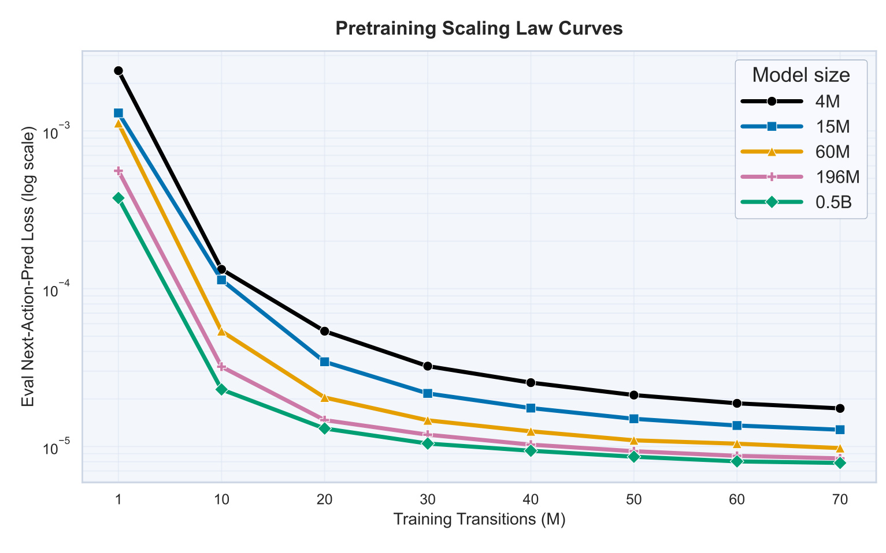
Figure 2 的横轴是训练 transition 数量，单位为百万，纵轴是对数尺度的留出动作预测损失，每条曲线对应一个模型规模。随着数据从一百万增加到七千万，多数曲线明显向下；同一数据量下，大模型通常比小模型的损失更低。作者拟合的幂律形式为损失约等于常数乘参数规模的负零点二四次幂和数据规模的负零点八四次幂，拟合优度为零点八二。这个数字说明所研究区间存在可概括的规模趋势，尚不能把它推广成无限扩大模型和数据都成立的普遍规律。尤其曲线后段逐渐平缓，实际扩容还需要与训练资源和部署成本相比较。
这项结果支持“把多场景日志组织成统一预训练语料是有用的”，因为模型能够从更大的联合数据中学到更准确的历史动作分布。但它不能单独证明出价策略优于历史策略：如果日志本身保守、有偏或含某些错误动作，更低模仿误差可能只是更准确地复现这些行为。论文因此还引入价值正则与后训练，并用线上实验检验真实结果。图中较大模型之间在高数据量时差距变小，也提醒我们部署模型的选择不应只追求最低离线损失；最终生产用了六千万规模，不能把五亿曲线的离线表现写成已上线的服务配置。这张图没有展示跨平台、未见新场景的独立评测，泛化范围仍主要由当前快手场景及时间留出定义。
训练与测试按时间切分有助于避免把相邻日志随机打散导致的过度乐观，但时间留出仍属于同一平台的历史分布。模型遇到市场竞争突变、转化归因规则调整或新广告类型时，是否保持这条缩放趋势，还需要专门的分布变化测试。
3.2 CTG 与序列专家消融
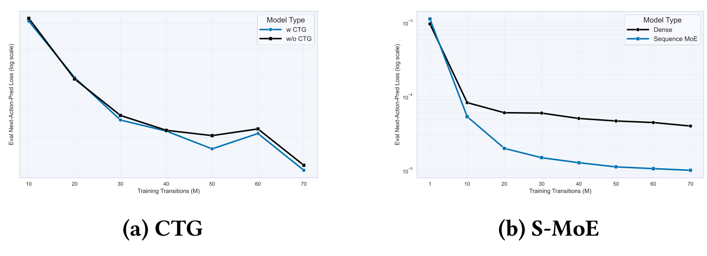
Figure 3 左侧比较保留与移除 CTG 的动作预测误差，右侧比较稠密模型和序列 MoE。两幅小图使用同一原图编号，必须结合横轴训练样本量和纵轴对数损失一起看。左图在不少样本量下保留 CTG 的曲线更低，说明显式成本偏差条件能够帮助解释历史动作；部分点相当接近，也没有给出误差棒，不宜把所有局部变化都解释为稳定显著收益。右图在匹配激活参数的条件下，序列 MoE 随数据量增加持续降低误差，而稠密模型下降幅度较小，符合“保持每次计算量受控、增加场景专属容量”的设计意图。
这组消融的对照单位是离线动作预测，不能直接得出“去掉 CTG 后线上成本失控”或者“MoE 独自贡献全部 ADVV 增长”。更严格的因果隔离还需要同一训练预算、容量、特征与在线流量下的组件实验。特别是右图强调匹配激活参数，而不是匹配总参数；MoE 用额外未同时激活的容量承接场景差异，正是它想利用的资源交换。这个交换可能还包含训练内存、参数加载与部署复杂度，图没有把这些成本一并量化。对于工程选型，应把图里的表示收益与后面的真实服务时延合起来看，而不是以激活 FLOPs 相近直接推断用户请求时延相同。
CTG 消融还帮助澄清双条件设计的作用边界。加入一个明确的成本状态目标，让模型不必从单一混合回报里反推偏好，但仍不代表两个目标在统计上完全独立；RTG 本身就使用目标成本边界，两个条件共享经济量。论文所谓“原子”更适合解释为接口可分别控制、语义相对清楚，而非数学上已证明信号解耦。若要进一步验证可控性，应固定状态和 RTG 扫描 CTG，检查输出倍率、末期成本比和有效投放的单调响应；本文的这张离线误差图没有直接给出这种干预实验。
3.3 价值模型与离线改进
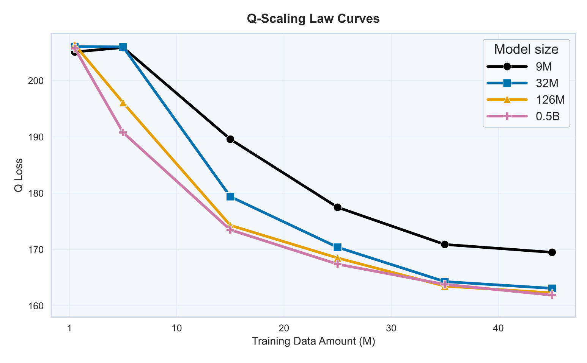
Figure 4 将后训练中的价值模型单独拿出来观察。横轴仍为训练数据量，纵轴是 Q 回归损失，图例从九百万、三千二百万、一亿二千六百万到五亿参数。整体上更多数据带来更低留出误差，大 critic 在中等数据量时下降更快；到高数据量处，较大几条曲线接近。这里图例的九百万与附录所述 critic 范围约八百万起存在近似规格差异，阅读时以具体图中标注为准，不把近似范围当作精确可复现实验配置。图提供的是日志分布上的回归质量证据，并没有展示各场景候选动作的真实排序准确率。
critic 之所以成为独立扩展对象，是因为 CROP 的优化方向直接取决于它给同一状态多个动作打出的相对分数。总体回归误差下降通常是有利信号，却不足以证明局部动作排序正确：大部分常见日志样本的误差可以主导均方误差，而策略挑选的高分边缘动作仍可能被高估。另一个问题是多场景数值尺度，一些大流量场景的误差可能掩盖稀疏场景表现；组内标准化只缓解更新尺度，无法补足没见过的结果。复现时因此不仅要报告总体 Q loss，还应按场景、成本区间和动作离日志的距离分桶评估，并检查候选相对优势是否稳定。
论文没有将这张图声称为线上收益的充分条件，其价值在于展示学习到的评价器也能受益于容量和数据，为后续离线改进提供更好的工具。把它与真实 A/B 连接时仍要保留中间缺口：已观测动作价值拟合、未执行动作反事实评分以及部署后的总体经济指标是不同问题。模型容量继续增大能否改善最难的分布外边界，没有由这组留出曲线回答；若实际部署必须限制训练成本，也需要看缩放收益是否集中在业务真正敏感的场景。
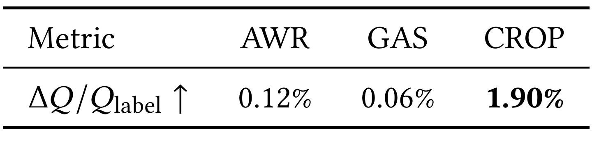
Table 1 报告 AWR、GAS 与 CROP 的归一化 Q 值改善，分别为百分之零点一二、百分之零点零六和百分之一点九零。它比较的是价值模型估计的变化，分母是标注 Q 的口径；绝不能把 CROP 的一点九零写成这里已经测到线上 ADVV 一点九增长。AWR 主要重加权日志中的动作，改进空间受原动作覆盖限制；GAS 在动作附近搜索，由 critic 选取候选；CROP 则在参考策略附近采样并直接更新策略分布。作者使用相同 actor 和 critic 架构进行相关基线对照，减少模型容量造成的混淆，附录还提供局部搜索范围等设置。
这组数值和前面的 critic 缩放构成“有一个更强的评价器，并能用它引导更高评分动作”的连续证据。但评价器既参与优化又参与评估时，存在利用模型偏差的风险：优化过程可能找到 critic 特别喜欢、真实环境未必更好的动作。因此 CROP 数值比其他方法大很多可以支持它更充分利用 critic 的设计，不能直接等价于同幅度的可靠经济收益。需要通过独立评价器、保守离线策略评估或线上受控验证确认。论文选择后者作为最终证据，并用策略偏移限制降低这一步的风险。
另一个容易混淆的点是相同百分比在不同表中重复出现。Table 1 的一点九零是离线估计价值改善，Table 2 的一点九是微调版相对 DT 的线上 ADVV 变化，二者不是同一个实验，也不互为直接校准关系。没有原始样本、计算分母、配对统计和评价器误差界，就不应把两个数接近当成离线指标能准确预测线上增幅的证明。正确的研究结论是离线比较方向与最终线上观察相容，但收益的数量映射仍未建立。
3.4 表单场景：预训练与后训练的线上证据
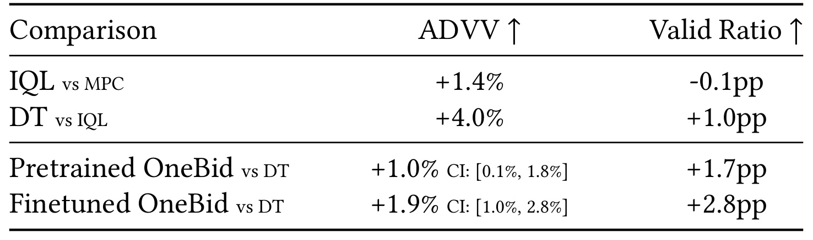
Table 2 显示 IQL 相对 MPC 的 ADVV 增长百分之一点四、VR 下降零点一个百分点；DT 相对 IQL 增长百分之四、VR 增加一个百分点。对于 OneBid，两条行名都明确写着相对 DT：预训练版 ADVV 增长百分之一，置信区间为百分之零点一到一点八，VR 增加一点七个百分点；微调版增长百分之一点九，区间为百分之一到二点八，VR 增加二点八个百分点。表注称每行对比直接前代，但末两行名称均指向 DT，存在原文内部矛盾。 本笔记以明确行名保守解读，不把末行写成在预训练版上再额外增长一点九。
如果假定末两行确实使用完全可比的同一 DT 基线，则 ADVV 增幅的点估计相差零点九个百分点；但这不是一个直接测量的微调对预训练 A/B 结果。精确相对比值还应是增长因子的比，而不能简单相加。置信区间也不能直接相减得到差异显著性，因为这需要知道配对关系、协方差和流量分配。论文文字描述认为后训练在预训练基础上继续改善，可以作为作者解释记录；单凭表中区间则不足以给这一边际贡献构造新的统计结论。这个读法同时保留了结果价值和证据边界。
线上实验使用生产流量，对照为各场景充分调优的在产 DT，文中说明每项实验使用百分之三十三生产流量、至少连续五天，并做前后 AA 验证流量等同性；只有实验期间改善方向一致时才报告平均收益。这是比只报离线价值更直接的证据，但论文未给每组活动数、每日分布、完整随机化单位和所有统计方法。表中的历史 MPC、IQL、DT 迭代也不能自动拼接成今天同一流量下的累计收益曲线。对部署决策最有用的是当前 OneBid 对 DT 的同时成本和价值表现，以及原文确实提供了明确置信区间。
3.5 生产服务与专家算子效率
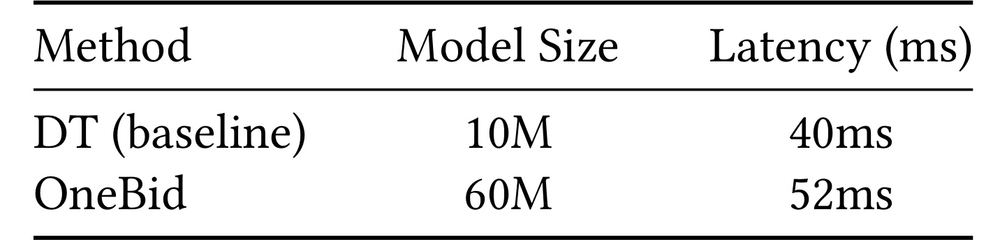
Table 3 把生产 DT 的一千万参数、四十毫秒，与 OneBid 的六千万参数、五十二毫秒并列。参数规模为六倍，而端到端时延增加十二毫秒，即相对增长百分之三十。作者称二者时延可比，合理理解是新模型仍能满足该生产系统的可接受范围，而不是时延持平或免费扩容。测量环境使用 TorchScript 与 C++ 加速，在平均一千 QPS、约一百五十颗 CPU 的真实服务平台上进行，两者均保持百分之九十九点九服务可用性。这里的端到端服务数据不能与 H800 上的单个专家实现测试混为同一指标。
这张小表对模型架构讨论很关键，因为稀疏专家经常只用激活参数或 FLOPs 说明效率，而实际延迟还包括特征处理、注意力、内存访问、执行图调度和系统队列。固定序列专家分支确实减少了 token 级调度，但仍然不能消除全部开销。表中没有列出 P95、P99、最大时延或不同 QPS 下的变化，所以“可用性相同”也不能替代尾延迟完整比较。若迁移到更紧的超时预算，十二毫秒增量可能很重要；若系统有余量、业务改善足够，则这是可能接受的资源交换，判断依赖具体服务约束。
从复现角度，读者应该把六千万当作该线上配置的总模型规模，避免将离线最大五亿模型与五十二毫秒配对。还需要注意一千 QPS 与一百五十 CPU 描述的是作者平台，不能直接据此推算任意硬件上的单核吞吐。论文给出总体部署可行性的证据，却没有发布可运行服务基准和资源成本分解，因此它支持“统一模型可在这套工程栈上线”，而不支持“任何大规模 MoE 出价模型都有类似开销”。这也是后面的算子实验必须单独标注口径的原因。
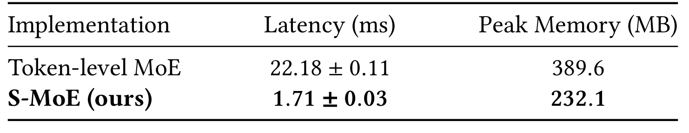
Table 5 在单张 H800 上比较二百五十六专家的 token 级 MoE 与序列级 MoE，批量为三十二、序列长度二十、隐藏维度一百二十八、每次选两个专家。token 级实现时延为二十二点一八毫秒、测量波动零点一一，序列级为一点七一毫秒、波动零点零三，前者约是后者十二点九七倍，因而作者概括为约十三倍。峰值内存分别为三百八十九点六和二百三十二点一 MB，减少约百分之四十点四。主文附近文字对前者内存写过近似三百八十八，精确记录以表格数值为准。
其解释符合架构设计：token 级不同位置进入不同专家，产生分发、重组和同步开销；序列级预先选好固定子集，避免同一序列内不断切换执行路径。规模很大且批量较小的服务中，调度成本可能成为主要瓶颈，所以即使激活专家数相同，实际时延也不相同。不过这里的二百五十六专家、序列二十与默认模型每层三十二专家、训练序列十并不是同一配置。算子试验刻意展示大专家数条件下的调度差异，不能把十三倍直接乘到全系统时延上，也不能替代 Table 3 的 CPU 服务测量。
论文没有展示不同 token 路由器实现、融合内核、专家并行方案与批量扫描，因此这个优势还依赖比较的具体实现。复现时需要将硬件、执行图、专家数、激活数、序列长度和计时边界同时固定，再比较均值和尾延迟。内存下降同样属于该基准的峰值占用，不等同于完整训练显存或模型权重存储下降。对工业设计最可靠的启发是把业务上稳定的场景边界用于固定执行分支，减少不必要的通用路由自由度；是否值得采用，应由自身请求形态下的基准验证。
3.6 多场景线上业务效果
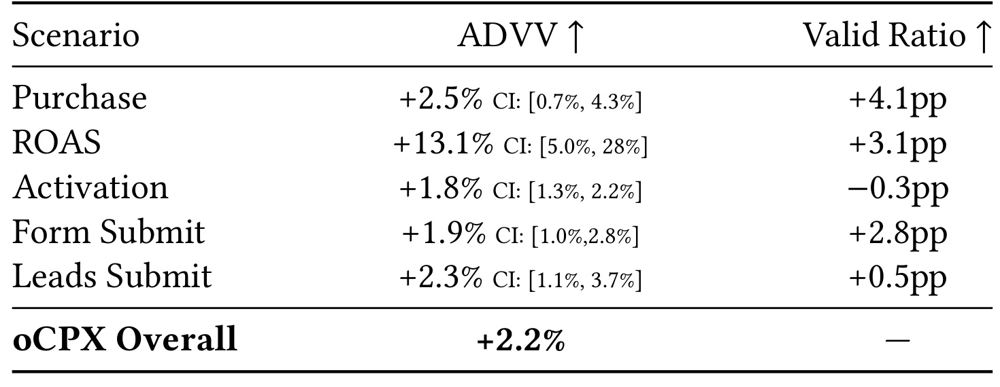
Table 4 给出购买场景 ADVV 增长百分之二点五，置信区间零点七至四点三，VR 增加四点一个百分点；ROAS 场景增长百分之十三点一，区间五至二十八，VR 增加三点一个百分点；激活增长百分之一点八，区间一点三至二点二，但 VR 下降零点三个百分点；表单增长一点九，区间一至二点八，VR 增加二点八个百分点；线索增长二点三，区间一点一至三点七，VR 增加零点五个百分点。总体 oCPX ADVV 增长百分之二点二，表内没有总体置信区间，也没有总体 VR 值。作者报告从二零二六年五月已全面部署。
这组结果最有分量的地方是不同转化稀疏度与价值定义的场景都出现 ADVV 正向变化，说明统一骨干并未只能服务某个单一目标。但不能称所有场景两项指标都改善：激活的成本有效率明确下降。一个平台可能在既有护栏内接受这种交换，可论文并未给出该场景 VR 的绝对基数、置信区间或合规阈值距离，因此笔记应保留负向变化，而不是用总体正向概括掉。ROAS 的增幅很大，同时区间较宽，反映不确定程度；也不能把它当成每个广告主、所有时间都会获得的稳定增益。
总体百分之二点二与 ROAS 百分之十三点一是不同聚合层级，不应相加、平均或拿一个替换另一个。表中没有提供场景流量权重与各自基线 ADVV，所以无法从五个子场景数字重算总体收益；此外正文训练包含七种场景，而这里仅列五种主要场景，并非所有训练场景逐一展示。有效率以成本加权，和“多少广告主满意”也不是同一统计量。工业读者最适合关注的是收益、成本护栏、异质性和部署资源的联合变化，而非挑出最大数字作统一性能标签。
3.7 共享与场景专家的表示
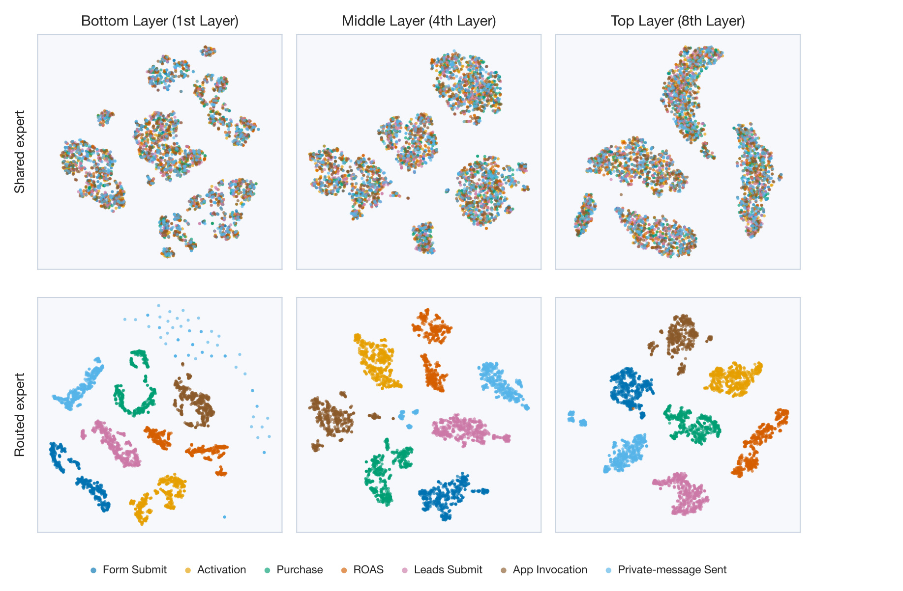
Figure 5 的每个点对应一条采样竞价序列，七种场景各取五百条，提取一百二十八维表示后用 t-SNE 投影到二维。列分别来自第一、第四和第八层；上排为共享专家，下排为路由专家。上排不同颜色比较混杂，下排更容易看到按场景分开的群簇，符合作者希望共享部分学习通用规律、路由部分保留场景差异的设计。不同深度都出现类似现象，比只展示最后一层提供了更多观察位置，但仍然属于定性表示分析。
首先，二维投影会改变高维距离和局部邻域，不能把颜色混杂直接解释成“已抽取所有可迁移知识”，也不能把簇分离当作已经证明因果解耦。其次，路由集合原本就由场景标识决定，结构本身鼓励差异化；可视化说明这种分工在表示上可见，不独立证明分离本身导致线上收益。若要证明知识共享而非仅记住场景，可以做低数据场景迁移、留出场景适配、专家交换或共享部分冻结实验，观察性能和样本效率，而不仅是投影几何。
图中的上排也不是一团均匀分布，而有自己的局部结构；下排同色点在不同层可能形成多个团块。这提醒我们“共有”和“私有”是架构意图，不是每个维度的可解释标签。论文没有发布所有投影超参数和随机种子敏感性，读者不宜用簇之间肉眼距离对场景相似性做定量排序。这里最稳妥的用途是与 Figure 3 的预测消融和线上跨场景结果共同构成相容证据：模型确实采用了区分场景的表示路径，且联合系统在多个场景有效，但每个专家存储了什么经济机制仍然未被直接识别。
3.8 CROP 训练动态与安全边界
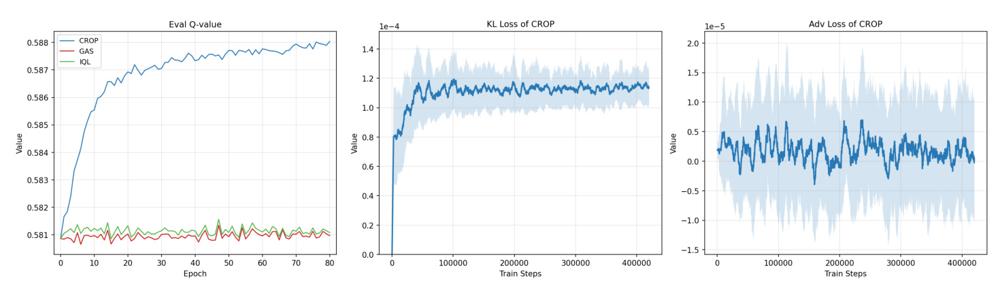
Figure 6 左图显示 CROP 的评价 Q 值随训练提高，而 GAS 和 IQL 曲线较平；中图展示 KL 损失在初期上升后保持较小且相对稳定；右图的优势损失围绕小量级波动。三个子图合起来说明当前设置下更新没有出现明显数值崩溃，actor 可以在参考策略附近取得更高 critic 评分。横轴并不相同，左侧以训练轮次表示，中右以训练步骤表示，因此不能把同一横坐标位置理解成完全同步的实验事件。曲线阴影的具体统计定义没有在图注中完整交代，不应自行给它标成某一级置信区间。
这种稳定性与安全性应严格区分。小 KL 意味着输出分布相对参考策略改变不大，但参考策略本身可能带有日志偏差；在稀疏场景和临界成本区域，小动作变化也可能造成非线性经济后果。Q 曲线提高则可能来自真实改善，也可能来自对固定 critic 误差的优化。因此附录提出的支持集限制、生产安全动作范围和保守价值训练，都是降低风险的具体设计，并不是已证明对所有广告活动绝对安全。线上成本有效率才提供了另一层真实验证，而且激活场景仍出现小幅下降。
作者在附录还用“支持集内评价误差乘分布偏移项”说明离线误差来源，并援引 KL 对总变差距离的控制。这个分析有助于解释为何不做无限制动作搜索，但没有给出可计算的每个场景 critic 误差上界，也没有把这个上界代入可验证的线上收益保证。研究推进的方向应是测量这些缺失量：动作候选离历史分布多远、不同成本区间的价值校准如何、训练步数增加时真实效果是否仍改善。当前曲线充分支持有限设置下的优化稳定诊断，不能单靠它宣布策略不会越界、不会退化或能替代生产护栏。
4. 总结
OneBid 的主要贡献，是把多种广告转化场景组织成一个统一预训练、场景化离线后训练的决策系统。双条件接口分别描述有效投放代理和未来成本偏差变化，价值辅助任务让骨干不仅拟合动作，还为后续 critic 初始化；序列级专家以业务场景固定激活分支，兼顾共享学习、场景残差和可预测执行；CROP 用同一状态下候选动作的相对 critic 分数更新 actor，并以参考策略和动作支持范围限制偏移。线上总体 ADVV 增长百分之二点二，使这项研究超出了单纯离线拟合改进，但所有具体结论仍以快手所报告的日志、流量和工程环境为适用边界。
有四类局限需要保留。第一，训练和评估依赖私有工业数据，没有公开可复现的多场景日志和完整服务实现，外部研究者难以重建归因延迟、赔付机制与真实拍卖反馈。第二，线上基线受生产安全和工程可上线要求限制，论文比较的是充分调优的在产策略，没有将所有学术方法逐一部署，也没有完成每个组件的在线因果隔离。第三，动作预测误差、Q 回归误差与估计价值改善只是诊断量，不能替代真实经济效果；候选分布外估值风险仍存在，模型置信度和护栏触发情况也未被充分量化。第四，服务结果只有有限配置和时延摘要，缺少完整尾延迟、资源成本与负载变化曲线，迁移时无法只依据六倍参数与五十二毫秒判断容量上限。
还有两个解释层面的风险不能省略。原文奖励公式中的 cost 与转化措辞存在歧义，必须在真实实现里核实每个字段的记账含义、归因窗口和补偿规则；Table 2 的表注与行名不一致，也意味着微调相对预训练的独立收益不能由表格直接获得。与此同时，Activation 的 VR 下降证明多目标权衡依然存在，统一模型并没有让所有场景自动同时最优。将这些问题如实列出不是否认系统收益，而是避免把作者展示的证据升级成其未展示的精确因果解释或无条件保障。
后续最值得跟进三条实验路径。其一，专门留出新转化场景或低数据广告主，测量共享骨干迁移时所需样本、适配成本与成本比恢复速度，以检验“基础模型”相对逐场景重训的真实价值。其二，为 critic 增加按场景和支持距离分层的校准与反事实评估，使用独立评价器验证 CROP 是否只是优化同一个评分模型，并追踪离线分数与线上收益之间的相关性。其三，将端到端服务基准扩展到多负载与尾延迟，比较序列专家、优化过的 token 专家和稠密模型在相同业务收益下的成本，而不只比较激活计算量。
对推荐广告工程而言，可迁移的思路是先把业务控制目标定义清楚，再决定统一建模的接口和容量分工。若某平台有强预算硬约束、不同费用结算或更长转化延迟，应该先验证这里的 RTG 代理、CTG 语义和奖励惩罚是否仍与目标一致，再复用专家和后训练方案。论文目前只覆盖出价控制，预算分配、节奏控制、检索排序和拍卖机制仍是耦合但未统一解决的环节。作者将跨模块协调列为未来方向；现有证据支持统一出价模型在特定生产体系中落地，而不是已经得到一个完整广告生态的通用决策最优解。